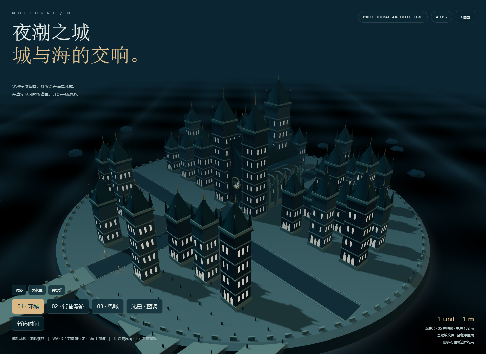

夜潮之城 · 新哥特式塔楼城市
本轮来源
用户指定 gpt-6.1-sol / max，明确允许当前会话。当前助手顺序执行，无子代理；模型名称来源为用户。完整用户要求与本题原文见 prompt.md。系统完整上下文、前序工具输出和历史缺失的材料未导出，输入标记 partial。
批次说明（文件未留存） · 校验记录（文件未留存） · 校验前首轮完整源码快照（文件未留存）
这是一次当前会话的实现记录，不能视作独立会话下的公平性能评测。没有人工修改，所有实现期修复由当前助手完成。
场景
1 个单位为 1 米。35 座塔楼、132 米主塔、教堂中殿、尖拱、玫瑰窗、飞扶壁、屋顶尖塔、街道、环岛海堤、桥与码头。海浪、火焰、星空均为程序粒子或 shader；建筑按材质合并批渲染。Three.js r160 内嵌于单文件，许可见 THIRD_PARTY_NOTICES.md。
操作
- 拖动环视，滚轮缩放，闲置环绕。
- 环城、街巷、鸟瞰三个模式；海港、教堂、尖塔群三个观景点。
- 街巷：WASD / 方向键，Shift 加速；手机有方向按钮。拖动或鼠标锁定调整朝向，Esc 释放。
- 四套光景，暂停时间，H 隐藏界面，保存 PNG 画面。
- 走路固定人眼高度；建筑矩形与岛屿边界阻挡移动。不是通用物理引擎。
运行与复盘
index.html 可直接打开或 HTTP 访问；已在阻断全部 HTTP 请求的 file:// 测试中渲染，390px 无溢出。WebGL 不可用时显示『待确认』提示。修复内嵌库替换时的美元符号展开、初始街巷朝向及帧率统计；静态几何合并后，一次采样绘制次数从 548 降至 18。该数字为本机一次观测，不能当成设备间公平性能结论；软件渲染环境未证明稳定 60 FPS。
预览截图

由本 run 登记的最终预览入口在 Chromium 1440 × 1050 桌面视口生成完整页面截图，采用默认初始演示状态。 <!-- archive:start -->
当前归档信息（自动生成）
- 实验 ID：
neo-gothic-tower-city--gpt-6-1-sol-max-r01 - 模型：GPT-6.1 Sol；推理档位：max
- 类型：single-html；预览：static；网络：offline
- 完整原始输入快照 · 主题与其他版本
- 输入记录：保存用户原始要求及基线任务正文；当前会话顺序执行。完整系统上下文与前序工具输出未导出，参见 docs/experiments/gpt-6-1-sol-max。
- 工具：Codex。用户指定 gpt-6.1-sol / max；当前会话直接执行，无子代理。Windows，Node 22.16.0，npm 10.9.2；日期按用户环境上下文。
- 运行方式：浏览器直接打开本目录入口；CDN/外部素材需要联网。
- 费用记录：OpenAI · ChatGPT Plus 订阅；单案例货币金额未记录。据用户说明，OpenAI 模型通过 ChatGPT Plus 订阅测试；全部案例完成后，五小时额度未耗尽。未提供单案例费用金额。
- 主页面
部署适配记录
- 2026-09-30：从空白基线首次实现；按主题最新提示词执行，未获取历史实现。
- 将官方 Three.js r160 分发内嵌到单 HTML，保留 MIT 许可；几何体、纹理、海浪或天气均由代码生成。
- 2026-09-30：校验修复：使用函数替换内嵌库，避免分发源码中的美元符号被替换器展开；修正街巷朝向、实际帧率统计与主塔尺度显示；按材质合并静态建筑，降低绘制次数。
- 2026-09-30：根据最终手机截图调整轨道相机取景距离与雾化范围，首次打开呈现完整场景。 <!-- archive:end -->